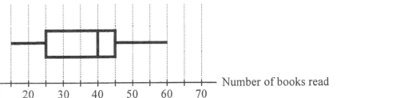

DSE 2015 · 卷二 · 第29題
箱形圖與四分位數
題目
下圖的箱形圖顯示某學期一些教師閱讀書本數目的分布。求該分布的四分位數間距。
A
$20$
B
$35$
C
$40$
D
$45$

圖（原卷附圖）
題解
第 1 步
從箱形圖讀出兩個四分位數
五數概括
\(\text{minimum},\ Q_{1},\ \text{median},\ Q_{3},\ \text{maximum}\)
箱形圖的左右兩邊界分別是 $Q_{1}$ 與 $Q_{3}$，箱內的直線是中位數。
由圖中的刻度讀出： \[Q_{1}=25,\qquad \text{median}=35,\qquad Q_{3}=45.\] 兩端鬚則給出最小值 $18$ 與最大值 $58$。
第 2 步
寫出四分位數間距的定義
四分位數間距
\(\text{IQR}=Q_{3}-Q_{1}\)
IQR 量度中間 50% 數據的分散程度，正是兩個箱邊之差。
四分位數間距只涉及 $Q_{1}$ 與 $Q_{3}$，與中位數、最大值、最小值都無關： \[\text{IQR}=Q_{3}-Q_{1}.\]
第 3 步
代入數值
代入求值
\(\text{IQR}=45-25=20\)
把圖上讀到的 $Q_{1}$、$Q_{3}$ 直接相減。
\[\text{IQR}=45-25=20.\] 即箱子的寬度為 20 個單位。
對照選項，答案為
A
。
選項 B 的 $35$ 是中位數，不是四分位數間距，這是最常見的陷阱。
答案
A
（$20$）
練習
同類新題
題目.
某箱形圖顯示某班學生的分數。兩端鬚位於 $8$ 與 $76$，箱的左右邊界為 $18$ 與 $52$，箱內直線在 $40$。求該分布的四分位數間距。
A
$34$
B
$40$
C
$24$
D
$58$
顯示題解
第 1 步.
讀出 $Q_{1}=18$、$Q_{3}=52$（箱的左右邊界），中位數 $40$ 與此題無關。
第 2 步.
四分位數間距 $=Q_{3}-Q_{1}$。
第 3 步.
$\text{IQR}=52-18=34$，答案
A
。
答案：
A
（$34$）
‹ 上一題
目錄
下一題 ›